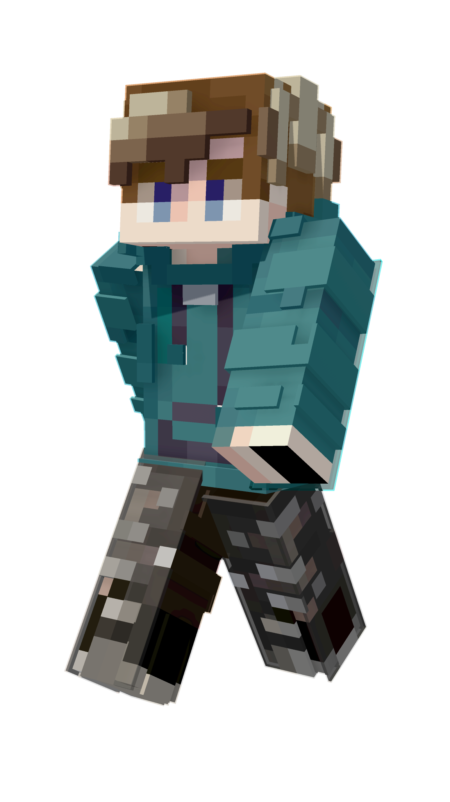

Minecraft developer · Caos Studio
EricReck
Mods y addons que hacen que cada mundo juegue distinto.
Desarrollo para Minecraft Java y Bedrock: desde sistemas de juego y herramientas para servidores hasta addons para tus mundos.

Java Edition Bedrock Edition4.8K+Descargas combinadas
7Proyectos publicados
01 / Cosas que he creado
Proyectos
del mundo real.
Mods y addons publicados para cambiar las reglas, dar herramientas a los servidores o añadir una idea nueva al juego.
02 / Ahora mismo
Desarrollando en Caos Studio.
Trabajo como developer en Caos Studio y publico mis proyectos en CurseForge y Modrinth. Minecraft Java y Bedrock, ideas pequeñas y sistemas que dan juego.
CURRENTLY
BUILDINGCAOS
STUDIO
BUILDINGCAOS
STUDIO
03 / Contacto